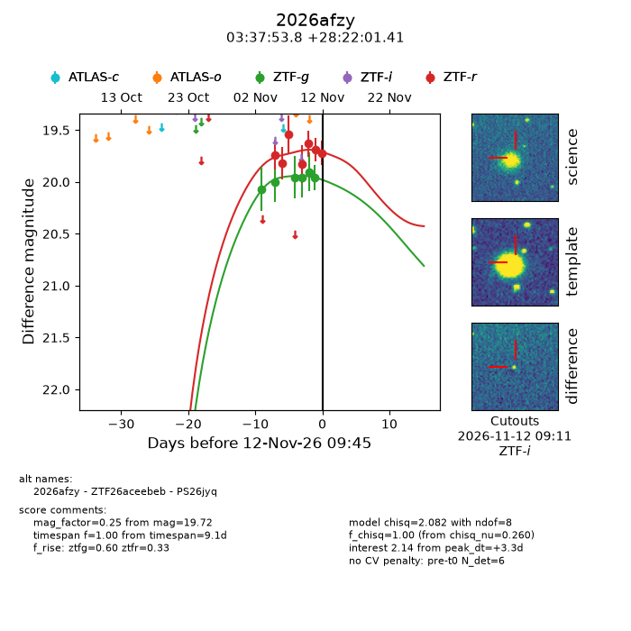
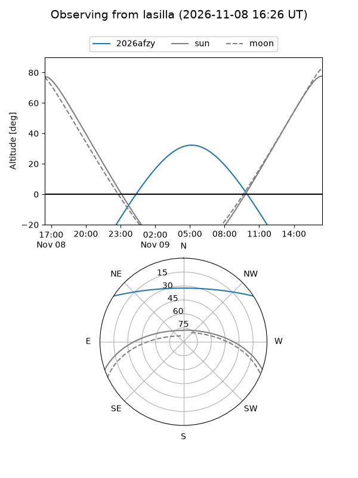
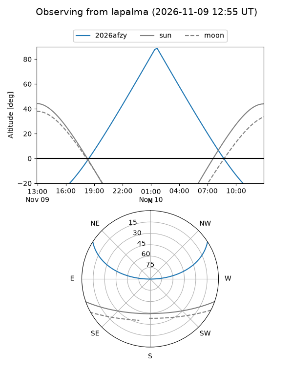
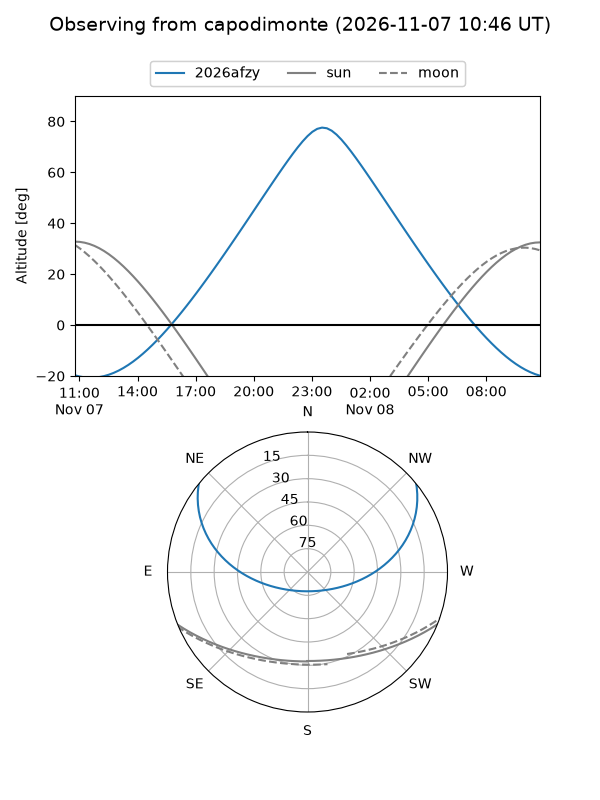
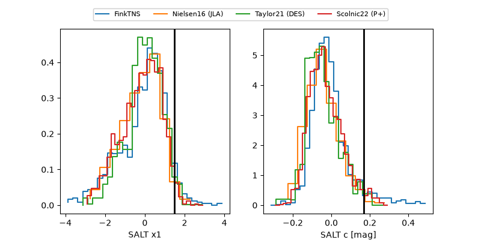

2026afzy
Target 2026afzy at 2026-11-12 09:49
Aliases and brokers:
FINK-ZTF: ztf.fink-portal.org/ZTF26aceebeb
Lasair-ZTF: lasair-ztf.lsst.ac.uk/objects/ZTF26aceebeb
ALeRCE-ZTF: alerce.online/object/ZTF26aceebeb
YSE-PZ: ziggy.ucolick.org/yse/transient_detail/2026afzy
TNS name: wis-tns.org/object/2026afzy
Direct TNS query: direct search
alt names
ZTF26aceebeb (ztf,fink_ztf)
2026afzy (tns,yse)
PS26jyq (panstarrs)
Coordinates:
equatorial (ra, dec) = 54.4741,+28.36706
equatorial (HMS+DMS) = 03:37:53.79,+28:22:01.41
galactic (l, b) = (161.8861,-21.64386)
Flags:
peak dt: +3.3
Photometry:
last ztfg=19.96, ztfr=19.72
6 ztfg, 7 ztfr detections
Lightcurve

Visibility



Additional plots
